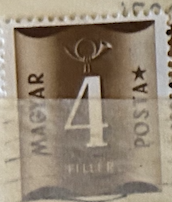
| SOURCE | TITLE| IMAGE MATCH | click to source page |
| sellosmundo.com | MAGYAR POSTA. Hungary Europe ref. 646 | 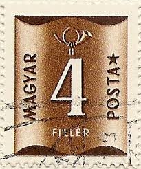 |
| Find Your Stamps Value | Value of MAGYAR POSTA 4 fillér stamps | 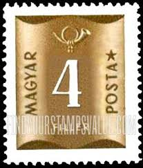 |
| Alamy | Postage stamp printed by Hungary, that shows Scarce Swallowtail (Iphiclides podalirius), circa 1966 Stock Photo - Alamy | 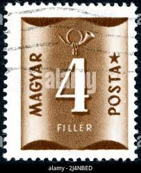 |
| Dreamstime.com | 5,179 Russia Hungary Stock Photos - Free & Royalty-Free Stock Photos from Dreamstime - Page 13 | 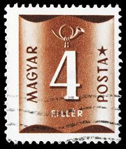 |
| Aukro | Maďarsko 1951 Mi:HU P191 Pošty | Čísla | Aukro | 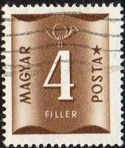 |
| Philaseiten.de | Philaseiten.de: Philaseiten Adventskalender | 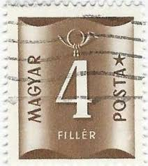 |
| HipStamp | Hungary #J205 40f Postage Due | Europe - Hungary, Postage Due Stamp / HipStamp | 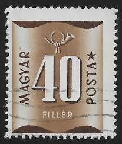 |
| Alamy | Postage stamp from Hungary in the Postage due series issued in 1951 Stock Photo - Alamy | 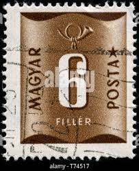 |
| Todocolección | sd)1961. hungary. flowers. roses. mnh. - Buy Antique stamps of Hungary on todocoleccion |  |
| sellosmundo.com | MAGYAR POSTA. Hungary Europe ref. 647 |  |
| 摄图网 | 徽章邮票图片_徽章邮票素材_徽章邮票高清图片_摄图网图片下载_第11页 | 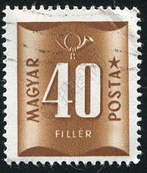 |
| Etsy | Hungary Postage Due Stamp Set 1922 to 1965 Coat of Arms Post Horn Anniversary - Etsy UK | 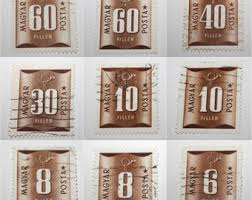 |
| 2dehands | ② Hongarije 1952 - Yvert 187TX - Takszegel - 8 fi. (PF) — Postzegels | Europa | Hongarije — 2dehands |  |
| eBay | Numeral Cancellation Hungarian Stamps for sale | eBay | 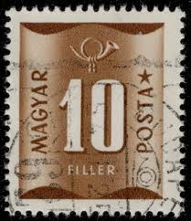 |
| eBay | 1940's Hungary Magyar Posta Postage Stamps ST-118 | eBay | 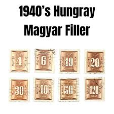 |
| stampsphilately.com | Hungary Stamps – StampsPhilately | 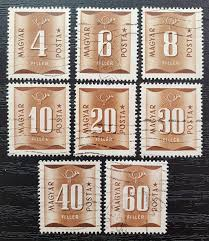 |
| Alamy | Postage stamp from Hungary in the Postage due series issued in 1951 Stock Photo - Alamy | 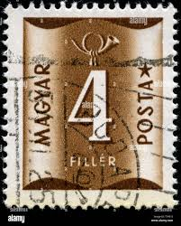 |
| Stamp Community Forum | Same Stamp - Different Value - Page 3 - Stamp Community Forum | 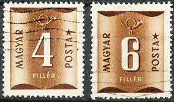 |
| Todocolección | sellos clásicos de hungría. años 1916/1923 - Buy Antique stamps of Hungary on todocoleccion | 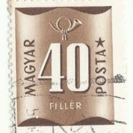 |
| eBay | Back of Book Hungarian Stamps for sale | eBay |  |
| 123RF | HUNGARY - CIRCA 1946 A Hungarian Used Postage Stamp Showing 4 Filler, Circa 1946 Stock Photo, Picture and Royalty Free Image. Image 22715683. | 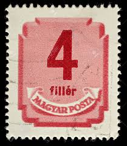 |
| Find Your Stamps Value | Value of magyar kir posta korona 2 rectangle brown stamps | 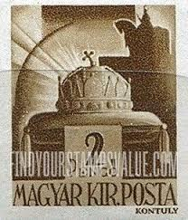 |
| Alamy | 8 hungarian filler hi-res stock photography and images - Alamy | 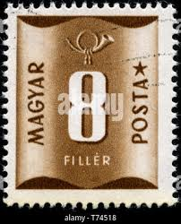 |
| Alamy | Postage stamp from Hungary in the Postage due series issued in 1951 Stock Photo - Alamy |  |
| The RainKey | Shop – Page 19 – The RainKey | 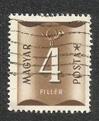 |
| Alamy | HUNGARY- CIRCA 1951: stamp printed by Hungary, shows workers, circa 1951 Stock Photo - Alamy | 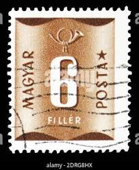 |
| eBay UK | Hungary - Postage Due Stamps 1951 - Used/CTO - SG D1210-D1213, D1215-D1220 | eBay UK | 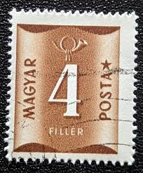 |
| eBay | HUNGARY 1951 8fi brown SGD1212 used NG POSTAGE DUE #A06 | eBay |  |
| iStock | Hungary Postage Stamp Stock Photo - Download Image Now - Black Background, Brown, Collection - iStock |  |
| Shutterstock | Hungary Circa 1951 Post Stamp Printed Stock Photo 2078032075 | Shutterstock |  |
| eBay | Magyar Foreign 40 Filler Brown Stamp Used - #A268 | eBay | 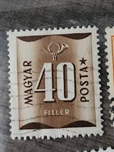 |
| Alamy | Bell of the horn hi-res stock photography and images - Alamy | 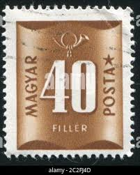 |
| Todocolección | hungría / temesvar 1919 - ocupación de rumanía, - Compra venta en todocoleccion | 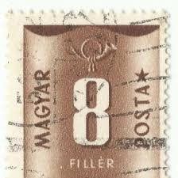 |
| PicClick | 1961 MAGYAR POSTA 30F & 40F Stamps Beautiful Condition - # 282 $2.00 - PicClick | 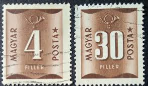 |
| HipStamp | Hungary #J201 10f Postage Due | Europe - Hungary, Postage Due Stamp / HipStamp |  |
| eBay Australia | HUNGARY 1958 - 1965, 2 Sheets Porto Stamps 2ft, 4ft - 200 Stamps - Brown - USED | eBay Australia | 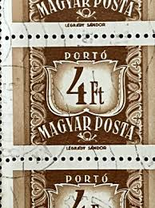 |
| Shutterstock | Postage Stamp Number: Over 3,405 Royalty-Free Licensable Stock Photos | Shutterstock | 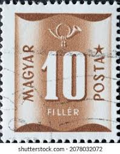 |
| eBay UK | HUNGARY 1951 10fi brown SGD1213 used NG POSTAGE DUE #A06 | eBay UK | 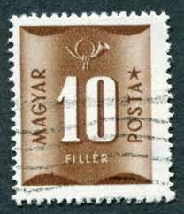 |
| ebid.net | Australia SG237d 1950 3d King George VI Used stamp on eBid United Kingdom | 220457115 |  |
| Todocolección | hungria - valor facial 4 ft - año 1964 - torre - Buy Antique stamps of Hungary on todocoleccion | 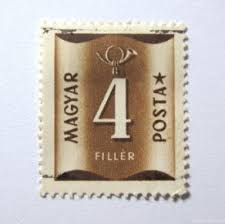 |
| Alamy | Hungary postage stamp hi-res stock photography and images - Page 2 - Alamy | 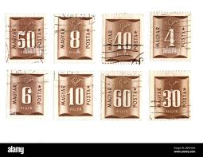 |
| sellosmundo.com | MAGYAR POSTA. Hungary Europe ref. 650 | 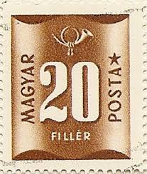 |
| sellosmundo.com | MAGYAR POSTA. Hungary Europe ref. 649 |  |
| Miraheze | Hungary – postage due issues - Stamp Encyclopedia | 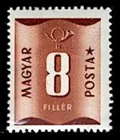 |
| Todocolección | magyar posta, hungria - v/f 6 f - personaje, 18 - Buy Antique stamps of Hungary on todocoleccion | 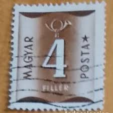 |
| eBay | Hungary Tax Stamp 192, Used, VF Stamp | eBay | 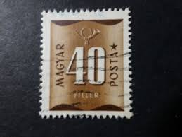 |
| eBay UK | HUNGARY 1951 6fi brown SGD1211 used NG POSTAGE DUE #A06 | eBay UK | 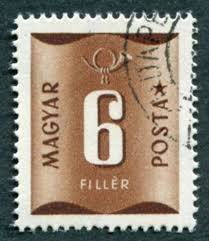 |
| Alamy | HUNGARY - CIRCA 1980: A stamp printed in HUNGARY shows image of the dedicated to the Magyar Posta, circa 1980 Stock Photo - Alamy |  |
| HipStamp | Hungary 1951 Sc#J199, SG#1211 6f Brown Postage Due USED. | Europe - Hungary, Postage Due Stamp / HipStamp | 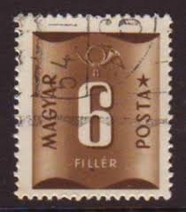 |
| Bélyegbarát - StampFriend... - Bélyegbarát - StampFriend | 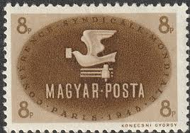 | |
| HipStamp | Hungary J198/208 used | Europe - Hungary, Postage Due Stamp / HipStamp | 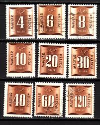 |
| Avi Roth | HUNGARY | Avi Roth | 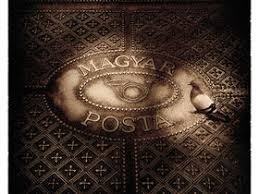 |
| Shutterstock | Karnal Haryana India -august 5th 2025-closeup Stock Photo 2670800629 | Shutterstock |  |
| eBay | HUNGARY 10 FILLER BROWN STAMP USED | eBay | 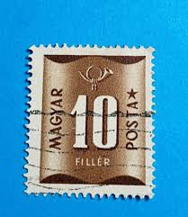 |
| Alamy | Postage stamp from Hungary in the Postage due series issued in 1951 Stock Photo - Alamy | 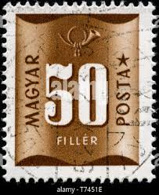 |
| Shutterstock | 1+ Thousand Postage Due Royalty-Free Images, Stock Photos & Pictures | Shutterstock | 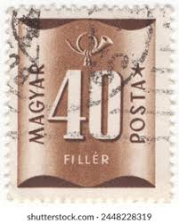 |
| Todocolección | hungría 1954 yvert: 1140 1146 1148 científicos - Buy Antique stamps of Hungary on todocoleccion | 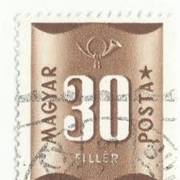 |
| ebid.net | Great Britain 1950 King George VI KG VI 2 1/2d Used Stamp. on eBid United Kingdom | 217585896 |  |
| stampphenom.com | Hungary 1950 Postage due – StampPhenom | 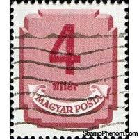 |